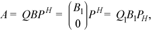

2.1.3.2.1. onemkl::lapack::gebrd¶
Reduces a general matrix to bidiagonal form.
gebrdsupports the following precisions.
T
float
double
std::complex<float>
std::complex<double>
Description
The routine reduces a general m-by-n matrix A to a
bidiagonal matrix B by an orthogonal (unitary) transformation.
If m≥n, the reduction is given by 
where B1 is an n-by-n upper diagonal matrix,
Q and P are orthogonal or, for a complex A, unitary
matrices; Q1 consists of the first n columns of
Q.
If m < n, the reduction is given by
A = Q*B*PH = Q*(B10)*PH = Q1*B1*P1H,
where B1 is an m-by-m lower diagonal matrix,
Q and P are orthogonal or, for a complex A, unitary
matrices; P1 consists of the first m columns of
P.
The routine does not form the matrices Q and P explicitly,
but represents them as products of elementary reflectors. Routines
are provided to work with the matrices Q and P in this
representation:
If the matrix A is real,
to compute
QandPexplicitly, call onemkl::lapack::orgbr.
If the matrix A is complex,
to compute
QandPexplicitly, call onemkl::lapack::ungbr
2.1.3.2.1.1. onemkl::lapack::gebrd (BUFFER Version)¶
Syntax
-
void
onemkl::lapack::gebrd(cl::sycl::queue &queue, std::int64_t m, std::int64_t n, cl::sycl::buffer<T, 1> &a, std::int64_t lda, cl::sycl::buffer<realT, 1> &d, cl::sycl::buffer<realT, 1> &e, cl::sycl::buffer<T, 1> &tauq, cl::sycl::buffer<T, 1> &taup, cl::sycl::buffer<T, 1> &scratchpad, std::int64_t scratchpad_size)¶
Input Parameters
- queue
The queue where the routine should be executed.
- m
The number of rows in the matrix
A(0≤m).- n
The number of columns in the matrix
A(0≤n).- a
The buffer
a, size (lda,*). The bufferacontains the matrixA. The second dimension ofamust be at leastmax(1, m).- lda
The leading dimension of
a.- scratchpad_size
Size of scratchpad memory as a number of floating point elements of type T. Size should not be less than the value returned by onemkl::lapack::gebrd_scratchpad_size function.
Output Parameters
- a
If
m≥n, the diagonal and first super-diagonal of a are overwritten by the upper bidiagonal matrixB. The elements below the diagonal, with the buffer tauq, represent the orthogonal matrixQas a product of elementary reflectors, and the elements above the first superdiagonal, with the buffer taup, represent the orthogonal matrixPas a product of elementary reflectors.If
m<n, the diagonal and first sub-diagonal of a are overwritten by the lower bidiagonal matrixB. The elements below the first subdiagonal, with the buffer tauq, represent the orthogonal matrixQas a product of elementary reflectors, and the elements above the diagonal, with the buffer taup, represent the orthogonal matrixPas a product of elementary reflectors.- d
Buffer, size at least
max(1, min(m,n)). Contains the diagonal elements ofB.- e
Buffer, size at least
max(1, min(m,n) - 1). Contains the off-diagonal elements ofB.- tauq
Buffer, size at least
max(1, min(m, n)). The scalar factors of the elementary reflectors which represent the orthogonal or unitary matrixQ.- taup
Buffer, size at least
max(1, min(m, n)). The scalar factors of the elementary reflectors which represent the orthogonal or unitary matrixP.- scratchpad
Buffer holding scratchpad memory to be used by routine for storing intermediate results.
Throws
- onemkl::lapack::exception
Exception is thrown in case of problems happened during calculations. The
infocode of the problem can be obtained by get_info() method of exception object:If
info=-i, thei-th parameter had an illegal value.If
infoequals to value passed as scratchpad size, andget_detail()returns non zero, then passed scratchpad is of insufficient size, and required size should not be less than value return byget_detail()method of exception object.
2.1.3.2.1.2. onemkl::lapack::gebrd (USM Version)¶
Syntax
-
cl::sycl::event
onemkl::lapack::gebrd(cl::sycl::queue &queue, std::int64_t m, std::int64_t n, T *a, std::int64_t lda, RealT *d, RealT *e, T *tauq, T *taup, T *scratchpad, std::int64_t scratchpad_size, const cl::sycl::vector_class<cl::sycl::event> &events = {})¶
Input Parameters
- queue
The queue where the routine should be executed.
- m
The number of rows in the matrix
A(0≤m).- n
The number of columns in the matrix
A(0≤n).- a
Pointer to matrix
A. The second dimension ofamust be at leastmax(1, m).- lda
The leading dimension of
a.- scratchpad_size
Size of scratchpad memory as a number of floating point elements of type T. Size should not be less than the value returned by onemkl::lapack::gebrd_scratchpad_size function.
- events
List of events to wait for before starting computation. Defaults to empty list.
Output Parameters
- a
If
m≥n, the diagonal and first super-diagonal of a are overwritten by the upper bidiagonal matrixB. The elements below the diagonal, with the array tauq, represent the orthogonal matrixQas a product of elementary reflectors, and the elements above the first superdiagonal, with the array taup, represent the orthogonal matrixPas a product of elementary reflectors.If
m<n, the diagonal and first sub-diagonal of a are overwritten by the lower bidiagonal matrixB. The elements below the first subdiagonal, with the array tauq, represent the orthogonal matrixQas a product of elementary reflectors, and the elements above the diagonal, with the array taup, represent the orthogonal matrixPas a product of elementary reflectors.- d
Pointer to memory of size at least
max(1, min(m,n)). Contains the diagonal elements ofB.- e
Pointer to memory of size at least
max(1, min(m,n) - 1). Contains the off-diagonal elements ofB.- tauq
Pointer to memory of size at least
max(1, min(m, n)). The scalar factors of the elementary reflectors which represent the orthogonal or unitary matrixQ.- taup
Pointer to memory of size at least
max(1, min(m, n)). The scalar factors of the elementary reflectors which represent the orthogonal or unitary matrixP.- scratchpad
Pointer to scratchpad memory to be used by routine for storing intermediate results.
Throws
- onemkl::lapack::exception
Exception is thrown in case of problems happened during calculations. The
infocode of the problem can be obtained by get_info() method of exception object:If
info=-i, thei-th parameter had an illegal value.If
infoequals to value passed as scratchpad size, andget_detail()returns non zero, then passed scratchpad is of insufficient size, and required size should not be less than value return byget_detail()method of exception object.
Return Values
Output event to wait on to ensure computation is complete.
Parent topic: LAPACK Singular Value and Eigenvalue Problem Routines